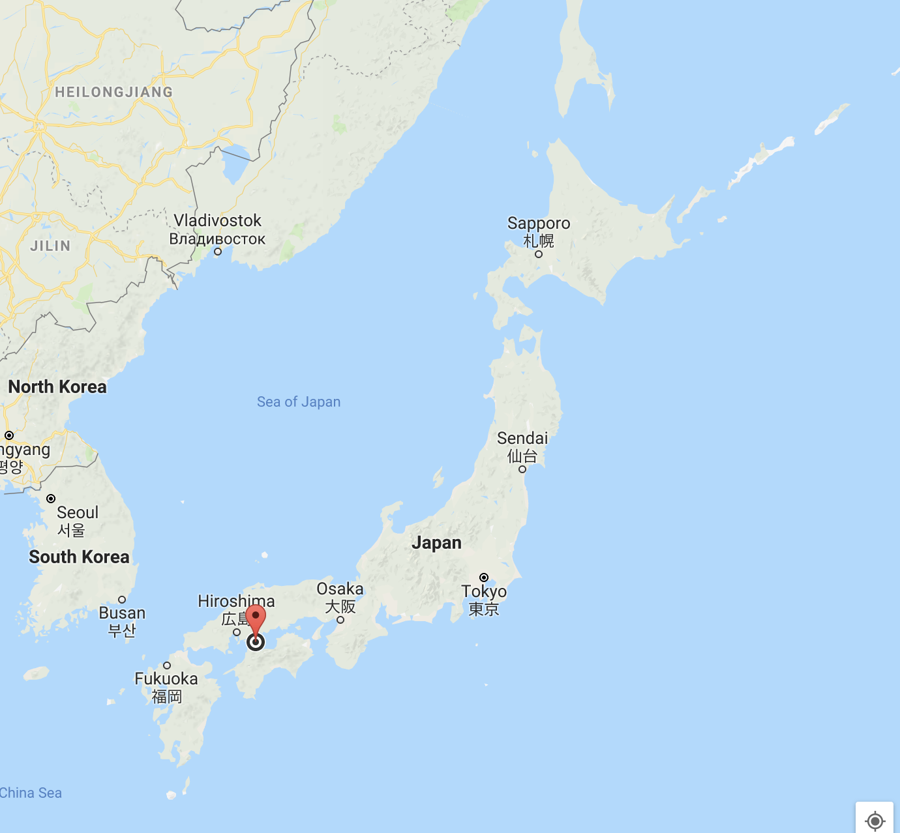

This is the one of the most beautifle place in the world.
You will listen only the sounds of beach.
You will feel the gratefulness of our nature.
TSUSHIMA

Tsushima was a small island in Ehime Prefecture, Japan.
An Beautiful Island
At the same time...
There were more than 10 thousands people in 15 years ago.
However, only 10 people live in this island